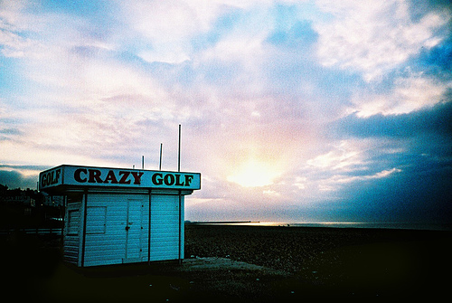

Sunday, December the 2nd, 2007
back to: title, date or indexes
You all know by now that there are untold hours of the sound of Mr Key babbling into a microphone available from the ResonanceFM Hooting Yard podcast hub. What may not be clear is that this treasure trove of twaddle is made available to you through the tireless work of unsung yet heroic figures who actually have a grasp of whizzbang 21st century technology (unlike Mr Key). So today I want to pay tribute to the current podcast maestro Marvin Suicide, in particular for his choice of photographic illustrations to each programme. This week, for the story Pancake Hints, he has excelled himself. Isn't this fantastic?

Acknowledgements are also due to the source of the photograph, one Slimmer Jimmer, whose work can be found here.